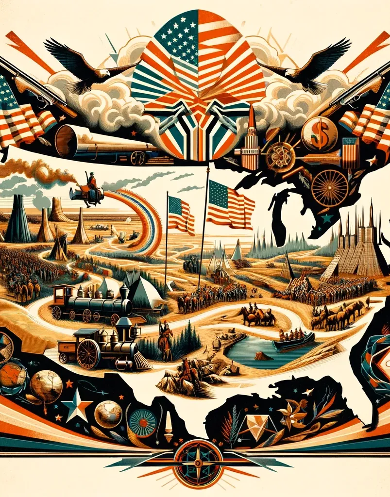
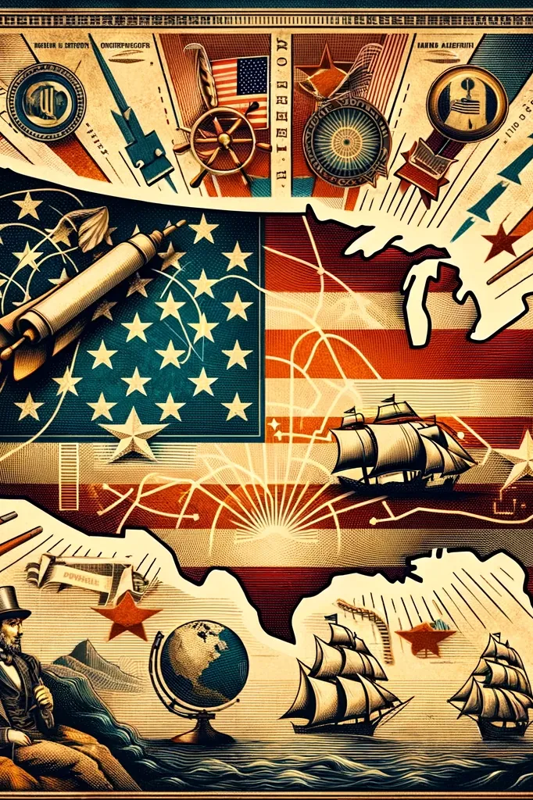
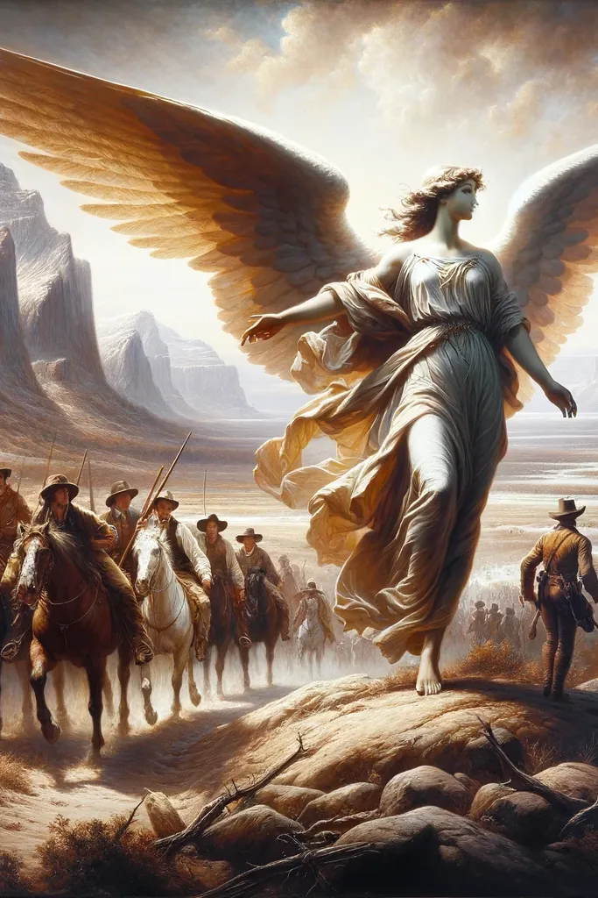
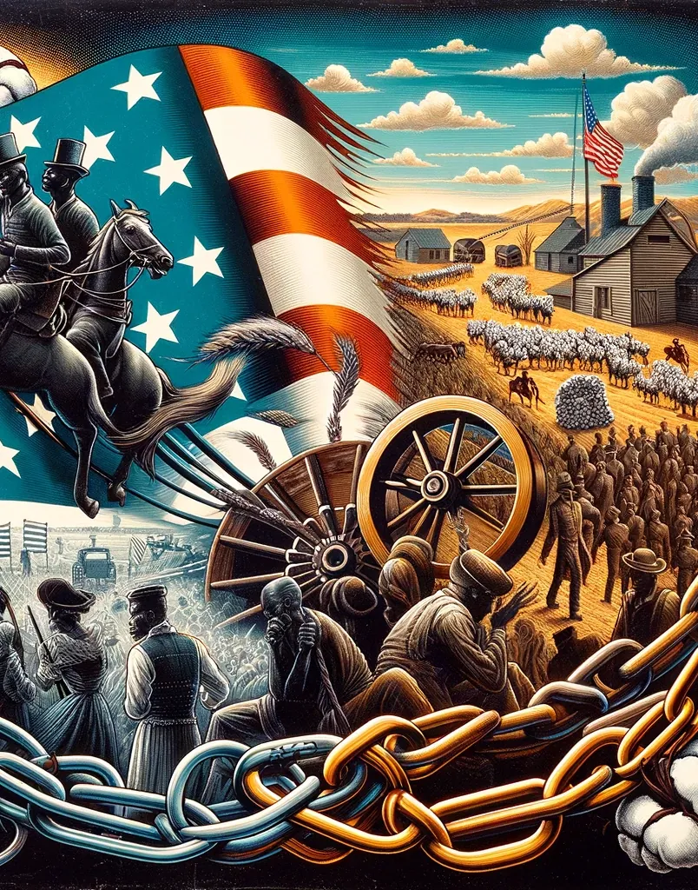

Manifest Destiny: An Empire for Liberty or Slavery?
Chapter 13
Growth as the American Way
Growth became watchword of America
Land acquired through annexation, negotiation, and war
“Young America” movement and "Manifest Destiny"
Relentless pressure on limits of Indian Settlements

Young America Movement
Origins and Ideology
Emerged in mid-19th century USA, primarily among Democrats.
Advocated for the expansion of American democracy and liberal reforms.
Domestic Policies
Supported free trade, opposed monopolies, and promoted infrastructure development.
Encouraged a distinct American cultural identity through arts and literature.
Young America Movement
Called for America to have a unique literary and artistic voice that reflected its national character
Cultural Nationalism – America should have a unique literary and artistic voice that reflected its national character, democratic ideals, and unique history
Break away from European influence
Emphasize Themes and Subjects that are distinctly American
Prominent Figures
Walt Whitman

Young America Movement
Stance on Slavery
Divided views: some opposed, others saw it as necessary for growth.
Political Influence
Significantly impacted the Democratic Party and U.S. politics.
Notable figures included President James K. Polk.
Legacy and Critique
Promoted American exceptionalism, but also linked to conflicts like the Mexican-American War.
Mixed legacy due to ambiguous position on slavery.
Manifest Destiny
Definition and Origins:
Manifest Destiny was a widely held belief that American settlers were destined by God to expand across the continent.
Coined in 1845 by journalist John L. O'Sullivan, the term encapsulated existing ideas about American exceptionalism, divine providence, and the mission to spread democracy and capitalism.
Ideological Foundations:
Rooted in a sense of American exceptionalism, the belief held that the United States was unique and superior in its political and social systems.
Religious overtones: Many adherents believed that this expansion was not only justified but also preordained by God.

Manifest Destiny
Impact on Expansion:
Manifest Destiny was a driving force behind the westward expansion of the United States.
It fueled the annexation of Texas, the Oregon Territory, and the Mexican-American War, which resulted in the acquisition of territories like California and New Mexico.
Reports from fur traders, explorers, missionaries, and sailors from California and Pacific Northwest described plentiful resources and placid regions of those counties
Opportunity to obtain cheap land and better economic opportunity in West

Manifest Destiny and Slavery
Division between slavery and freedom in territories of Louisiana Purchase yet to become states supposedly settled by Compromise of 1820
However, expansion into new territories a very controversial issue
Issue first arose with Texas, which helped provoke a war with Mexico in 1846
The Republic of Texas
Early U.S. Settlement in Texas under Mexico initially encouraged
Restrictions eventually imposed
Texans Revolution
The Alamo
Battle of San Jacinto
Won Independence in 1836
Republic of Texas created; constitution allowed slavery
Then petitioned for annexation to the United States
The Annexation Controversy
Jackson, then Van Buren, refused to act on annexation
After assuming office upon William Henry Harrison’s death, new president John Tyler was ready to move
Annexation treaty negotiated
Defeated by northerners in Congress who opposed expanding slavery
Became an issue in election of 1844
Democrat James K. Polk, who ran on pro-annexationist platform, nominated over Democratic opponent and anti-annexation candidate Martin Van Buren
Whig candidate Henry Clay wavered over annexation
Polk won close election
Acquisition of Texas
Congress passed joint resolution of annexation of Texas in March 1845
Texas became 15th slave state in March 1845
Added vast slave holding territory; leads to the Mexican-American War
The Mexican-American War
Polk provoked to acquire California and New Mexico
First sought to purchase territories from Mexico
Buttress with show of force on Texas–Mexico border
Declaration of war in May
Almost all Whigs supported, though they had doubts
4th Hour Video Assignment
The Mexican-American War
The Wilmot Proviso
Proposed by David Wilmot (Democrat, Pennsylvania)
Main provision was to prohibit slavery in any territory that might be acquired as a result of Mexican-American War
Highlighted deep divide over issue of slavery
North In favor of proviso | South opposed
Political Realignment
Northern Democrats began to align with anti-slavery Whigs and Free Soilers laying ground work for Republican Party
Southern Democrats doubled down on their support of slavery
“Neither slavery nor involuntary servitude shall ever exist” in any newly acquired territory
New Principles
From Wilmot Proviso debates new principles over slavery emerged
Northern/Ant-Slavery Position – Congress has right to ban slavery wherever its jurisdiction extended
Freedom is National, Slavery is Sectional
Republican Party formed to support this principle
Platform of the South – Southern Democrats put forward new principle: Congress has no right to prohibit slavery and a positive duty to protect slavery
“Platform of the South” territories belong to “states united” not the United States
Democratic Platform and doctrine underlying Dred Scott case
The Gold Rush and California Statehood
January 24, 1848 Gold discovered at Sutter’s Mill
soon besieged by thousands of fortune hunters
By the following year about 80,000 “forty-niners” (as the fortune seekers of 1849 were called) had stampeded to the California goldfields,
and 250,000 of them had made it by 1853.
The Gold Rush and California Statehood
Confluence of People
More than 250,000 people from all over the globe
Mingled with Peoples already there
Californios
Indians
Skipped territory stage; directly applied for statehood
The Gold Rush and California Statehood
Re-Opened Slave Question
Bitter debate in Congress for 6 months
Question over slavery in California
Debates demonstrated South would secede if they don’t get their way
Compromise proposed by Henry Clay
Known as Compromise of 1850
Compromise of 1850: The Senate Debates
The ongoing debates were primarily focused on two major issues: the status of fugitive slaves and how to manage the territories won from Mexico following the Mexican-American War.
Senator Henry Clay sought to settle these critical disputes
At first, various proposals were lumped together in one bill
Senators and representatives voted against it in order to kill parts they disliked
Compromise of 1850: Passage of the Compromise
Stephen Douglas changed tactics and separated the various components
Won support gradually, piece by piece
Not the final settlement supporters had hoped for
Compromise of 1850 Final Settlement
California admitted as free state in 1850
Ended slave/free state balance; anti-slavery majority in both houses
New Fugitive Slave Law
Slave trade outlawed in Washington DC
New Mexico and Utah admitted as territory on basis of popular sovereignty